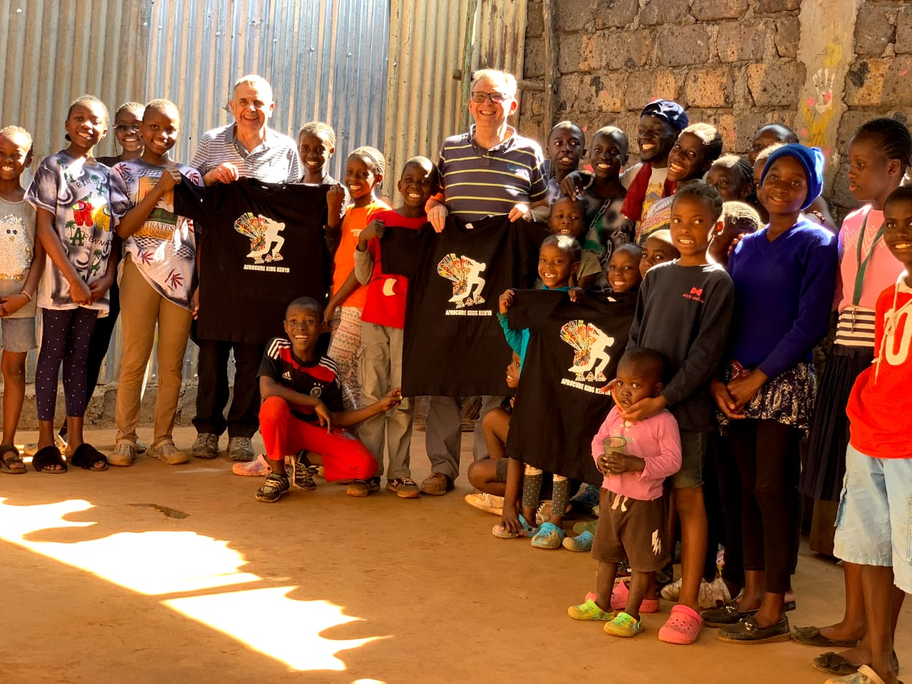

Partners
Support the centre with funding, training or resources that keep programs running and meals served.
Partner, volunteer or collaborate with AfroCure and help make sure Kibera's children have access to arts, performance, meals and support.

Ways to help
Whether you can give a day, a skill or a monthly gift, there is a place for you at AfroCure.
Support the centre with funding, training or resources that keep programs running and meals served.
Work directly with students in art, dance, drama or mentoring sessions. Every hour builds confidence.
Bring new creative projects, festivals, workshops or community events into AfroCure's programs.
Donate supplies, equipment or technical help for events, performances and daily program needs.

Why it matters
Every session at AfroCure relies on people who show up. Volunteers, partners and collaborators are the reason 200+ children and youth walk into a warm space every week — to paint, dance, eat, talk and feel seen.
Whatever you bring — an afternoon, a skill, a contact, a box of art supplies — translates into a real change in a child's day. There is no contribution too small to matter here.
Getting started
No long process. Tell us what you would like to do and we will find the right fit.
Send us a short message describing your interest: partner, volunteer, collaborator or supplies.
We will reply within two business days to arrange a call or a visit to the centre in Kibera.
Agree a schedule or contribution, then meet the team and the children you will be working with.
We stay in touch with updates on how your time or contribution is being used.
What to expect
A gentle, structured rhythm — the same one our children have come to rely on.
Meet the staff, tour the space, and go through a short welcome with the lead mentor before the children arrive.
Assist with an art, dance, music or drama session — helping hands, materials and encouragement are always needed.
Debrief with the team, share what worked, and — if you like — stay for tea. Connection is part of the program.
In-kind giving
Not everyone can give time — and that is completely fine. The centre is kept running by people who drop off a bag of paint, a drum, a stack of books or a box of food. Every item is used that same week.
If you are not sure what is useful, ask us. We keep a live list of current needs, and we will always tell you exactly where your donation went.
Any day, 10:00 am to 6:00 pm

Skills we value
You do not need to be an expert. You need to be reliable, kind and curious about the children we serve.
Painters, illustrators, sculptors or anyone who can lead a group through a creative project from start to finish.
Dancers, choreographers, musicians or sound engineers who can run a session, teach a style, or support the Dance Academy.
Photographers, social media managers, event organisers, drivers or anyone who can help behind the scenes.
Common questions
A few things people ask us before getting involved. If yours is not here, just write to us.
No. Most volunteers start with no teaching experience. We will pair you with an experienced mentor for your first few sessions.
As much or as little as you can. Some volunteers come once a month, some come weekly, some come for a single festival. All of it helps.
Volunteers must be 18 or older to work directly with children, or 16+ with a guardian's written consent and supervision.
Yes — and we encourage it. Come by any day between 10:00 am and 6:00 pm, meet the team, and see a session in action.
Write to us and we will get back to you with the next steps, or donate directly to keep the programs free.